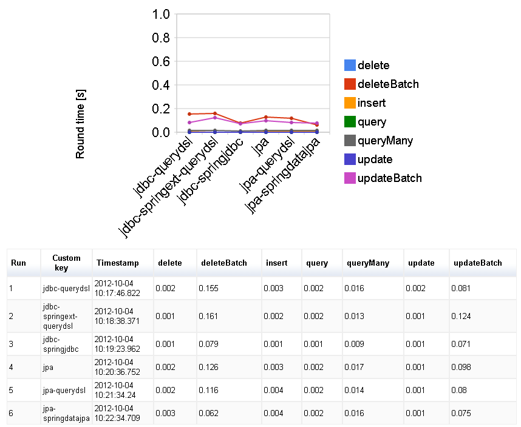

studyorm
just comparing implementations using Object-Relational-Mapping Tools and Libraries in Java
libraries used
- Java Persistence API 2.0
- Spring DATA JPA
- QueryDsl(JPA)
- QueryDsl(SQL)
- Spring JDBC
- Spring DATA JDBC Extension
implementation status
| ORM | insert | delete | batch delete | update | batch update | query | joined query | Example Source Code |
|---|---|---|---|---|---|---|---|---|
| Java Persistence API 2.0 | Yes | Yes | Yes | Yes | Yes | Yes | Yes | JpaOperations.java |
| Spring DATA JPA | Yes | Yes | Yes | Yes | Yes | Yes | Yes | SpringDataJpaOperations.java |
| QueryDsl(JPA) | N/A*1 | N/A*1 | N/A*1 | N/A*1 | N/A*1 | Yes | Yes | QueryDslJpaOperations.java |
| QueryDsl(SQL) | Yes | Yes | Yes | Yes | Yes | Yes | Yes | QueryDslSqlOperations.java |
| Spring JDBC | Yes | Yes | Yes | Yes | Yes | Yes | Yes | SpringJdbcOperations.java |
| Spring DATA JDBC Extension | Yes | Yes | Yes | Yes | Yes | Yes | Yes | QueryDslTemplateOperations.java |
*1 QueryDsl(JPA) is just to improve the JPA queries, therefore the JPA EntityManager is still used for updating data manipulations.
database schema
- in this example implementations, two tables are used,
CustomerandOrder(the actual table isTOrder. This is to avoid syntactic problem onORDER BY). They have one relation, an Order has a Customer. - see create-tables.sql for actual definition.
micro benchmarking
- recorded and visualized using junit-benchmarks
- result raw data: gist of benchmark result page